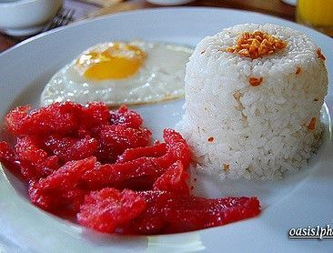

Ang tosilog ay isang paboritong almusal o merienda sa Pilipinas. Ang pangalan na "tosilog" ay isang pagsasama
ng tatlong salita: Tocino, Sinangag, at Itlog. Ito ay binubuo ng mga sumusunod na sangkap: tocino (marinated
na baboy), sinangag (sinangag na kanin), at itlog (itlog na pula o puti).
Ang tosilog ay nagmula sa salitang "tocino," na nangangahulugang baboy na inihaw o binababad sa pampalasa
tulad ng asukal, bawang, toyo, at iba pa. Ang tocino ay karaniwang ginagamit bilang ulam o panghimagas sa
Pilipinas. Kasama ito sa mga lutuing inihahanda tuwing almusal o merienda.
Ang sinangag, naman, ay kanin na nilutong may bawang at iba pang pampalasa tulad ng toyo, asin, at paminta.
Ito ay niluluto sa mantika o mantika ng baboy upang magkaroon ng malasang lasa. Ang sinangag ay karaniwang
kasama sa mga lutuing Pilipino at madalas na iniluluto kasama ang iba't ibang karne, isda, o gulay.
Ang itlog naman, na maaaring pula o puti, ay karaniwang niluto bilang sunny-side up o itlog na pula. Ito ay
madalas na ginagamit bilang pampalasa o pagsabay-sabayin sa tosilog para sa karagdagang lasa at sustansiya.
Kapag pinagsama-sama ang mga ito, nabubuo ang tosilog na karaniwang inihahain kasama ng sawsawan tulad ng
suka, toyo, o ketchup. Ang tosilog ay karaniwang kainin kasama ng mainit na sabaw tulad ng sinigang na may
iba't ibang uri ng karne o tinolang manok.
Ang tosilog ay isang popular na pagkain sa mga karinderya, turo-turo, at mga kainan sa Pilipinas. Ito rin ay
madalas na inihahanda sa mga pamilyang tahanan bilang simpleng at masustansyang almusal o meryenda. Ang lasa
ng matamis na tocino, kasabay ng kasamang sinangag at itlog, ay nagbibigay ng kumpletong kombinasyon ng asim,
tamis, at alat na nagpapasarap sa bawat kagat.
Sa huling salita, ang tosilog ay hindi lang isang lutuing umiikot sa masarap na pagkain, ito rin ay
nagpapahayag ng kahalagahan ng almusal bilang pinakamahalagang kainan ng araw. Ito ay nagbibigay ng enerhiya
at lakas sa simula ng bawat umaga. Ang tosilog ay isang patunay ng masarap at malasa na kultura ng pagkain ng
mga Pilipino.
Tocilog: Ang Pambihirang almusal ng mga Pinoy
